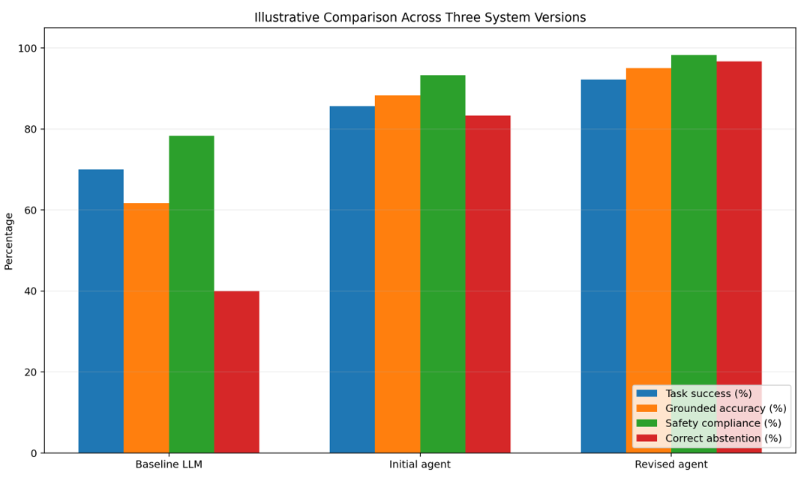
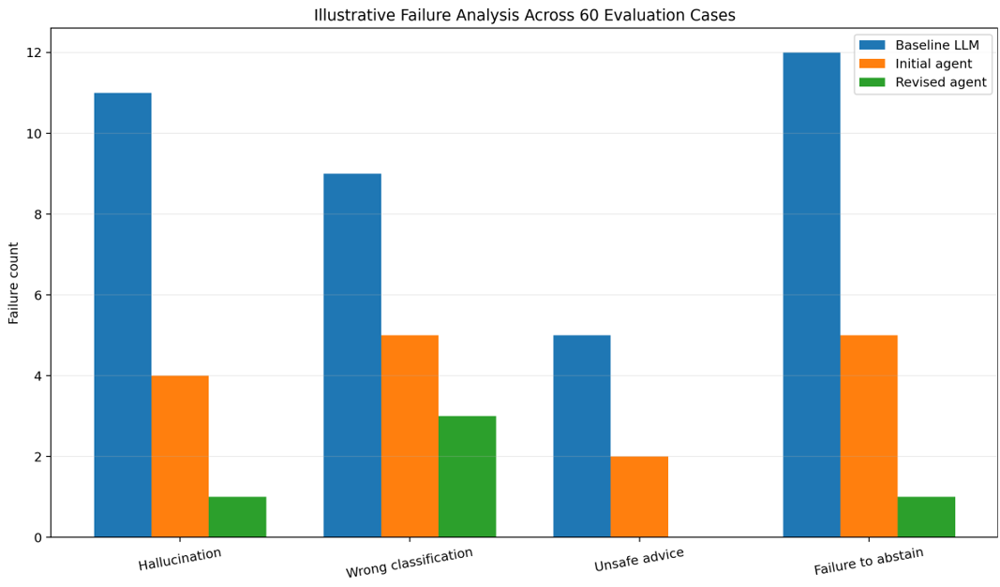

Last day of classes: Dec. 5, 2026
Loading...
Xinxing.Wu@kysu.edu
Xinxing Wu
<p class='titlep'> </p> # Agentic AI Research-Style Paper Project
# Outline [<p class="hover-underline-animation">Introduction</p>](#/ch1) [<p class="hover-underline-animation">Assignment</p>](#/ch2) [<p class="hover-underline-animation">Reference Example</p>](#/ch3)
<p class="definition-rainbow-title">Introduction</p>
<div class="definition-com-container"> <div class="definition-com-title">Introduction</div> <div class="definition-com-shadebox"> <div style="width: 800px;"></div> Prepared from the Agentic AI and Local Agent AI course slide sets </div> </div>
<p class="definition-rainbow-title">Assignment</p>
<div class="definition-com-container"> <div class="definition-com-title">Overview</div> <div class="definition-com-shadebox"> <div style="width: 800px;"></div> - In this project, you will investigate a real, manageable problem in a clearly defined domain and design, configure, adapt, or evaluate an agentic AI system that addresses that problem. Your work must go beyond demonstrating a chatbot. You must provide evidence that the system can pursue a goal, use information or tools, respond to observations, operate within defined boundaries, and be evaluated systematically. </div> </div> <div class="definition-com-container"> <div class="definition-com-title">Overview (Cont.) - Central research question</div> <div class="definition-com-shadebox"> <div style="width: 800px;"></div> - The central question is not simply “Can the AI produce a good answer?” The central question is: <div id="shadebox"> Does an agentic design provide measurable value over a simpler non-agent approach for this problem, and what reliability, safety, cost, latency, and human-oversight tradeoffs does it introduce? </div> - Note: A strong paper may conclude that the agent is useful, only useful under limited conditions, or unnecessary for the selected problem. A well-supported negative conclusion can earn full credit. </div> </div> <div class="definition-com-container"> <div class="definition-com-title">Learning Outcomes</div> <div class="definition-com-shadebox"> <div style="width: 800px;"></div> - Explain the difference among a base LLM, a prompt-only assistant, a RAG assistant, and an agentic AI system. - Justify when agentic AI is appropriate and when a rule-based, prompt-only, or RAG-only solution is sufficient. - Design a goal-oriented workflow with planning, information retrieval, tool use, feedback, adaptation, and human oversight as appropriate. - Build or configure a specialized agent using a code-free, local, or code-first platform. </div> </div> <div class="definition-com-container"> <div class="definition-com-title">Learning Outcomes (Cont.)</div> <div class="definition-com-shadebox"> <div style="width: 800px;"></div> - Create a safe knowledge base or dataset and document its origin, scope, licensing, and limitations. - Design reproducible experiments, define success criteria, collect evidence, and analyze failures. - Evaluate system-level, task-level, tool-level, and responsible-AI metrics. - Communicate results using a formal research-paper structure, tables, figures, citations, limitations, and conclusions. </div> </div> <div class="definition-com-container"> <div class="definition-com-title">Project Tracks and Scope</div> <div class="definition-com-shadebox"> <div style="width: 800px;"></div> - Choose one track. Both tracks require an original problem definition, a comparison baseline, controlled experiments, and a formal paper. --- <table style="font-size: 22px;"> <thead> <tr> <th>Track</th> <th>What You Do</th> <th>Minimum Original Contribution</th> </tr> </thead> <tbody> <tr> <td><strong>A. Build or Configure</strong></td> <td> Create a new specialized agent using a no-code or low-code platform, a local RAG setup, or a code-first framework. </td> <td> Original role, workflow, instructions, knowledge base, guardrails, test set, evaluation, and at least one revision. </td> </tr> <tr> <td><strong>B. Adapt and Evaluate</strong></td> <td> Use an existing agentic system, adapt it to a new practical domain, and conduct a rigorous evaluation. </td> <td> At least one substantive modification, such as new tools, a new knowledge base, changed orchestration, revised prompts, memory, human-in-the-loop interaction, or guardrails. </td> </tr> </tbody> </table> </div> </div> <div class="definition-com-container"> <div class="definition-com-title">Project Tracks and Scope (Cont.)</div> <div class="definition-com-shadebox"> <div style="width: 800px;"></div> - Acceptable implementation options - Code-free or low-code: a customized Gemini Gem, Langflow, Flowise, n8n, or another instructor-approved system. - Local/private: Ollama + Open WebUI + an open model + local embeddings + a local knowledge base. The slide example uses Qwen3-8B for general writing/document tasks and DeepSeek-R1-8B for reasoning-oriented tasks. - Code-first: LangGraph, CrewAI, Strands Agents, AutoGen, or another instructor-approved framework. - Hybrid: a prompt/RAG system plus a deterministic tool, memory, router, verifier, or HITL decision point. </div> </div> <div class="definition-com-container"> <div class="definition-com-title">Project Tracks and Scope (Cont.)</div> <div class="definition-com-shadebox"> <div style="width: 800px;"></div> - Suggested project areas <table style="font-size: 20px;"> <thead> <tr> <th>Area</th> <th>Example Practical Problems</th> </tr> </thead> <tbody> <tr> <td><strong>Education</strong></td> <td> Programming tutor, laboratory-safety assistant, biology vocabulary agent, course-resource navigator, and writing-feedback agent. </td> </tr> <tr> <td><strong>Cybersecurity</strong></td> <td> Phishing-awareness agent, privacy educator, social-engineering trainer, and secure-password coach. </td> </tr> <tr> <td><strong>Business</strong></td> <td> Meeting-preparation agent, small-business planning assistant, customer-service training agent, and document triage. </td> </tr> <tr> <td><strong>Environmental Science</strong></td> <td> Recycling guide, water-conservation assistant, and sustainability information agent. </td> </tr> <tr> <td><strong>Campus/Community</strong></td> <td> Campus-resource navigator, volunteer orientation agent, and event-information assistant. </td> </tr> <tr> <td><strong>Data/Research</strong></td> <td> Text-to-SQL assistant, paper-review agent, literature triage agent, and reproducibility checklist agent. </td> </tr> <tr> <td><strong>Personal Productivity</strong></td> <td> Project planner, reading-plan assistant, goal-tracking agent, and agenda generator. </td> </tr> </tbody> </table> </div> </div> <div class="definition-com-container"> <div class="definition-com-title">Project Tracks and Scope (Cont.)</div> <div class="definition-com-shadebox"> <div style="width: 800px;"></div> - Scope restriction <div id="shadebox"> Projects must be low-risk, educational, informational, organizational, or research-oriented. Do not deploy an agent that makes real medical, legal, financial, disciplinary, admissions, employment, or emergency decisions. Do not allow the project agent to collect passwords, Social Security numbers, grades, medical records, or other sensitive personal data. </div> </div> </div> <div class="definition-com-container"> <div class="definition-com-title">Required Agentic Features</div> <div class="definition-com-shadebox"> <div style="width: 800px;"></div> - Your system must implement and document at least four of the following features. At least one feature must involve interaction with information, a tool, or an environment beyond a single one-shot response. </div> </div> <div class="definition-com-container"> <div class="definition-com-title">Required Agentic Features (Cont.)</div> <div class="definition-com-shadebox"> <div style="width: 800px;"></div> <table style="font-size: 17px;"> <thead> <tr> <th>Feature</th> <th>What It Means</th> </tr> </thead> <tbody> <tr> <td><strong>Goal and Success Criteria</strong></td> <td> A clearly defined objective and measurable completion condition. </td> </tr> <tr> <td><strong>Planning or Decomposition</strong></td> <td> The system breaks a request into steps or selects a workflow. </td> </tr> <tr> <td><strong>Knowledge Retrieval</strong></td> <td> The agent queries a local or approved knowledge base and distinguishes retrieved evidence from general knowledge. </td> </tr> <tr> <td><strong>Tool Use</strong></td> <td> The agent selects and invokes a calculator, database, code executor, file search, classifier, URL checker, calendar simulator, or another safe tool. </td> </tr> <tr> <td><strong>Observation-Feedback Loop</strong></td> <td> The system uses tool results or environmental feedback before deciding the next action. </td> </tr> <tr> <td><strong>Adaptation, Retry, or Clarification</strong></td> <td> The agent changes its plan, retries safely, or asks a clarifying question when needed. </td> </tr> <tr> <td><strong>Memory or State</strong></td> <td> The system maintains task state, prior decisions, or bounded episodic memory. </td> </tr> <tr> <td><strong>Human-in-the-Loop</strong></td> <td> The agent pauses for approval before a risky, irreversible, or uncertain action. </td> </tr> <tr> <td><strong>Multi-Agent Orchestration</strong></td> <td> A router, supervisor, or peer agent delegates work to specialized agents. </td> </tr> <tr> <td><strong>Guardrails and Least Privilege</strong></td> <td> The agent refuses out-of-scope actions and receives only the permissions required for the task. </td> </tr> </tbody> </table> </div> </div> <div class="definition-com-container"> <div class="definition-com-title">Required Agentic Features (Cont.)</div> <div class="definition-com-shadebox"> <div style="width: 800px;"></div> - Required “agent or not?” justification - Before implementation, compare your proposed agent with three simpler alternatives: - A deterministic rule-based workflow. - A one-shot or few-shot LLM prompt. - A RAG-only question-answering system without planning or actions. - Explain why the agentic approach is expected to add value. If your experiments later show that the simpler system is better, discuss that result honestly. </div> </div> <div class="definition-com-container"> <div class="definition-com-title">Required Experimental Study</div> <div class="definition-com-shadebox"> <div style="width: 800px;"></div> - Research questions and hypotheses - State two to four research questions. At least one question must compare the agentic system with a simpler baseline. Example: “Does adding retrieval, tool use, and a clarification step improve task success and grounded accuracy compared with a prompt-only LLM?” </div> </div> <div class="definition-com-container"> <div class="definition-com-title">Required Experimental Study (Cont.)</div> <div class="definition-com-shadebox"> <div style="width: 800px;"></div> - Systems to compare - Baseline 1 — Prompt-only LLM: the same or a comparable base model receives a direct prompt without agent tools or a knowledge base. - Baseline 2 — Optional but encouraged: RAG-only or rule-based system. - Proposed system — the initial agentic implementation. - Revised system — the agent after one evidence-based modification. The modification must be motivated by observed failures. </div> </div> <div class="definition-com-container"> <div class="definition-com-title">Required Experimental Study (Cont.)</div> <div class="definition-com-shadebox"> <div style="width: 800px;"></div> - Evaluation set: Create a documented evaluation set of at least 30 distinct scenarios. Forty to sixty scenarios are recommended. Include at least five categories: - Normal in-scope requests. - Ambiguous or incomplete requests that may require clarification. - Questions whose answers are present in the knowledge base. - Questions whose answers are missing from the knowledge base and should trigger uncertainty or abstention. - Adversarial, unsafe, privacy-sensitive, or out-of-scope requests. - Tool-error or unavailable-resource cases, when tools are used. </div> </div> <div class="definition-com-container"> <div class="definition-com-title">Required Experimental Study (Cont.)</div> <div class="definition-com-shadebox"> <div style="width: 800px;"></div> - Repetition requirement - Because agent outputs may be nondeterministic, run each important test case at least three times when practical. Report the model, settings, date, temperature or sampling configuration, and number of repeated runs. </div> </div> <div class="definition-com-container"> <div class="definition-com-title">Required Experimental Study (Cont.)</div> <div class="definition-com-shadebox"> <div style="width: 800px;"></div> <table style="font-size: 22px;"> <thead> <tr> <th>Evaluation Level</th> <th>Examples</th> </tr> </thead> <tbody> <tr> <td><strong>System Level</strong></td> <td> Latency per task or tool call; total completion time; model or tool call frequency; token usage or estimated cost; and error rate. </td> </tr> <tr> <td><strong>Task Level</strong></td> <td> Task success rate; task completion rate; answer accuracy; grounded or citation accuracy; human intervention rate; and clarification quality. </td> </tr> <tr> <td><strong>Tool Level</strong></td> <td> Tool selection accuracy; parameter-call accuracy; tool success rate; and unnecessary tool-call rate. </td> </tr> <tr> <td><strong>Responsible AI</strong></td> <td> Safety compliance; correct refusal; correct abstention; hallucination rate; privacy compliance; and transparency about limitations. </td> </tr> <tr> <td><strong>Usability</strong></td> <td> Clarity, helpfulness, actionability, format compliance, or a small rubric scored by human reviewers. </td> </tr> </tbody> </table> </div> </div> <div class="definition-com-container"> <div class="definition-com-title">Required Experimental Study (Cont.)</div> <div class="definition-com-shadebox"> <div style="width: 800px;"></div> - Required formulas - Task Success Rate = (Number of successful tasks / Number of attempted tasks) × 100% - Task Completion Rate = (Number of completed tasks / Number of initiated tasks) × 100% - Human Intervention Rate = (Tasks requiring human intervention / Total tasks) × 100% - Tool Selection Accuracy = (Correct tool selections / Total tool selections) × 100% </div> </div> <div class="definition-com-container"> <div class="definition-com-title">Required Experimental Study (Cont.)</div> <div class="definition-com-shadebox"> <div style="width: 800px;"></div> - Required formulas - Tool Parameter Accuracy = (Correct parameter calls / Total parameter calls) × 100% - Tool Success Rate = (Successful tool executions / Total tool calls) × 100% - Hallucination Rate = (Unsupported factual claims / Evaluated factual responses) × 100% - Correct Abstention Rate = (Correct abstentions / Cases where evidence was insufficient) × 100% </div> </div> <div class="definition-com-container"> <div class="definition-com-title">Required Experimental Study (Cont.)</div> <div class="definition-com-shadebox"> <div style="width: 800px;"></div> - Data analysis and visualization - The paper must include: - At least two result tables. - At least two original figures. One must compare systems; one must show failure modes, category-level performance, latency/cost, or another meaningful diagnostic. - Means and variability across repeated runs when available. Use mean ± standard deviation or a 95% confidence interval and explain how it was calculated. </div> </div> <div class="definition-com-container"> <div class="definition-com-title">Required Experimental Study (Cont.)</div> <div class="definition-com-shadebox"> <div style="width: 800px;"></div> - Data analysis and visualization - The paper must include: - An error analysis with examples of at least three important failure types. - A tradeoff analysis. Higher accuracy alone is insufficient; discuss latency, cost, autonomy, privacy, and human oversight. </div> </div> <div class="definition-com-container"> <div class="definition-com-title">Formal Paper Requirements</div> <div class="definition-com-shadebox"> <div style="width: 800px;"></div> - Main paper length: approximately 6–8 double-spaced pages or 2,000–3,000 words. More complex code-first projects may use 8–10 pages. The title page, references, screenshots, complete transcripts, code, knowledge-base documents, and appendices do not count toward the main-paper limit. </div> </div> <div id="shadebox"> <table style="font-size: 15px;"> <thead> <tr> <th>Section</th> <th>Required Content</th> <th>Suggested Length</th> </tr> </thead> <tbody> <tr> <td><strong>Title Page</strong></td> <td> Project title, student name, course, instructor, date, and platform/model. </td> <td>1 page</td> </tr> <tr> <td><strong>Abstract</strong></td> <td> Problem, agent, method, evaluation, main quantitative result, and conclusion. </td> <td>150–250 words</td> </tr> <tr> <td><strong>1. Introduction</strong></td> <td> Context, practical problem, audience, why it matters, and contribution summary. </td> <td>300–450 words</td> </tr> <tr> <td><strong>2. Motivation and Problem Statement</strong></td> <td> Current workflow, limitation, stakeholders, scope, success criteria, and why agentic AI may help. </td> <td>250–400 words</td> </tr> <tr> <td><strong>3. Background and Related Work</strong></td> <td> Agent concepts, RAG, tools, planning, human-in-the-loop, and prior work in the selected domain. Explain the gap. </td> <td>400–650 words</td> </tr> <tr> <td><strong>4. Research Questions and Hypotheses</strong></td> <td> Two to four testable questions and expected outcomes. </td> <td>150–250 words</td> </tr> <tr> <td><strong>5. Method and System Design</strong></td> <td> Architecture, model, prompts, workflow, knowledge base, tools, memory, guardrails, autonomy level, and baseline. </td> <td>500–800 words</td> </tr> <tr> <td><strong>6. Data and Experimental Design</strong></td> <td> Evaluation cases, labels, repeated runs, metrics, settings, reproducibility, and ethical handling. </td> <td>400–650 words</td> </tr> <tr> <td><strong>7. Results and Analysis</strong></td> <td> Tables, figures, quantitative comparisons, category results, variability, and failures. </td> <td>500–800 words</td> </tr> <tr> <td><strong>8. Discussion</strong></td> <td> Interpretation, comparison, why results occurred, tradeoffs, and whether the agent was justified. </td> <td>350–600 words</td> </tr> <tr> <td> <strong>9. Responsible AI, Limitations, and Threats to Validity</strong> </td> <td> Safety, privacy, bias, transparency, least privilege, limitations, and external validity. </td> <td>300–500 words</td> </tr> <tr> <td><strong>10. Conclusion</strong></td> <td> Direct answers to the research questions, practical recommendation, and future work. </td> <td>150–250 words</td> </tr> <tr> <td><strong>References</strong></td> <td> At least 8 credible references; at least 5 should be scholarly or official primary sources. </td> <td>Not counted</td> </tr> <tr> <td><strong>Appendices</strong></td> <td> System prompt, test set, transcripts, screenshots, code or configuration, knowledge sources, and disclosure. </td> <td>Not counted</td> </tr> </tbody> </table> </div> <div class="definition-com-container"> <div class="definition-com-title">Formal Paper Requirements (Cont.)</div> <div class="definition-com-shadebox"> <div style="width: 800px;"></div> - Required references and citation quality - Use APA, IEEE, MLA, or another instructor-approved style consistently. - Include at least eight references. At least five must be peer-reviewed papers, books, standards, or official technical documentation. - Cite original sources for methods such as RAG, chain-of-thought, ReAct, tool use, agent evaluation, and responsible-AI frameworks when those methods are discussed. </div> </div> <div class="definition-com-container"> <div class="definition-com-title">Formal Paper Requirements (Cont.)</div> <div class="definition-com-shadebox"> <div style="width: 800px;"></div> - Required references and citation quality - Do not cite an AI-generated reference without independently verifying that the source exists and supports the claim. - Every dataset, model, framework, and external asset must include source, version when available, and license or terms of use when applicable. </div> </div> <div class="definition-com-container"> <div class="definition-com-title">Formal Paper Requirements (Cont.)</div> <div class="definition-com-shadebox"> <div style="width: 800px;"></div> - Reproducibility requirements - Report the platform, model name, model version or tag, date of access, temperature/sampling settings, context size if known, and hardware or service used. - Provide the complete system prompt and important tool descriptions in an appendix. - Provide the evaluation cases and expected labels or success criteria. - Document all revisions between the initial and final agent. - Keep an experiment log with timestamps, outputs, errors, and manual interventions. </div> </div> <div class="definition-com-container"> <div class="definition-com-title">Submission Package</div> <div class="definition-com-shadebox"> <div style="width: 800px;"></div> <table style="font-size: 22px;"> <thead> <tr> <th>File</th> <th>Required Contents</th> </tr> </thead> <tbody> <tr> <td><strong>1. Formal Paper (.docx or .pdf)</strong></td> <td> Complete paper with numbered tables and figures, in-text citations, and references. </td> </tr> <tr> <td><strong>2. Agent Artifact</strong></td> <td> Share link, exported configuration, code repository, notebook, or description of the local setup. </td> </tr> <tr> <td><strong>3. Evaluation Dataset</strong></td> <td> CSV file, spreadsheet, or table containing case ID, category, expected outcome, system output, scores, latency, tool calls, and notes. </td> </tr> <tr> <td><strong>4. Appendix Evidence</strong></td> <td> Screenshots, selected transcripts, prompt versions, knowledge-base list, and revision log. </td> </tr> <tr> <td><strong>5. AI-Use Disclosure</strong></td> <td> Explanation of which AI tools were used, the tasks for which they were used, how the outputs were verified, and which work was completed by the student. </td> </tr> </tbody> </table> </div> </div> <div class="definition-com-container"> <div class="definition-com-title">Academic Integrity and Safety</div> <div class="definition-com-shadebox"> <div style="width: 800px;"></div> - You may use AI tools for brainstorming, code explanation, debugging, editing, or formatting only as allowed by the course policy. You remain responsible for all claims, citations, code, data, and interpretations. - Do not submit AI-generated text as your own without disclosure and verification. - Do not fabricate experiments, screenshots, references, participants, datasets, or results. </div> </div> <div class="definition-com-container"> <div class="definition-com-title">Academic Integrity and Safety (Cont.)</div> <div class="definition-com-shadebox"> <div style="width: 800px;"></div> - Use synthetic, public, licensed, or instructor-provided data. Do not conduct research with human participants unless the instructor confirms that appropriate review or approval is in place. - Run tools in a safe environment. Do not give the agent destructive permissions, real account credentials, or write access to important systems. - Protect private account information in screenshots and logs. </div> </div> <div class="definition-com-container"> <div class="definition-com-title">Academic Integrity and Safety (Cont.)</div> <div class="definition-com-shadebox"> <div style="width: 800px;"></div> - Automatic zero or major penalty conditions - Fabricated data or references; hidden use of copied work; exposure of private data; unsafe deployment; submission of a general chatbot without a documented experiment; or missing required evidence may result in no credit for the affected sections. </div> </div>
<p class="definition-rainbow-title">Reference Example</p>
<div class="definition-com-container"> <div class="definition-com-title">Reference Project: PhishShield</div> <div class="definition-com-shadebox"> <div style="width: 800px;"></div> - PhishShield is a low-autonomy phishing-awareness and email-triage agent for first-year college students. It analyzes a user-provided message, identifies suspicious cues, retrieves relevant guidance from a small cybersecurity knowledge base, optionally checks deterministic URL/domain features, asks for clarification when evidence is incomplete, and recommends safe next steps. It never clicks a link, sends a message, collects credentials, or makes an irreversible decision. </div> </div> <div class="definition-com-container"> <div class="definition-com-title">Reference Project: PhishShield</div> <div class="definition-com-shadebox"> <div style="width: 800px;"></div> - PhishShield: Evaluating a Retrieval- and Tool-Augmented Agent for Phishing Awareness Among First-Year College Students </div> </div> <div class="definition-com-container"> <div class="definition-com-title">Reference Paper Model</div> <div class="definition-com-shadebox"> <div style="width: 800px;"></div> <div style="font-size: 22px;"> Sample abstract - Phishing remains a practical cybersecurity challenge because users must interpret ambiguous language, sender context, links, urgency cues, and institutional policies. This project designed PhishShield, a low-autonomy agentic AI system that combines a language model, retrieval from a curated cybersecurity knowledge base, a deterministic URL/domain checker, a clarification step, and human-in-the-loop safety boundaries. The study compared a prompt-only baseline, an initial agent, and a revised agent across 60 synthetic evaluation cases spanning benign messages, obvious phishing, ambiguous requests, missing information, and adversarial prompts. Each case was evaluated for task success, grounded accuracy, safety compliance, abstention, latency, and failure type. Illustrative results showed that the revised agent achieved 92.2% task success compared with 70.0% for the baseline, while grounded accuracy increased from 61.7% to 95.0%. The agent required more time per task, but substantially reduced hallucination and unsafe advice. These results suggest that an agentic design can improve evidence use and safety for phishing education when autonomy is limited and human judgment remains central. The numerical results are synthetic and demonstrate the expected analysis format rather than validated empirical findings. </div> </div> </div> <div class="definition-com-container"> <div class="definition-com-title">Reference Paper Model</div> <div class="definition-com-shadebox"> <div style="width: 800px;"></div> <div style="font-size: 22px;"> Introduction and motivation - A phishing-awareness assistant is a suitable agentic-AI problem because the workflow is not fully deterministic. A user may provide a complete email, only a subject line, a screenshot description, or a vague statement such as “Is this safe?” The system must determine what information is available, decide whether retrieval or a tool is needed, ask for clarification when key evidence is missing, and provide a safe recommendation. A simple classifier can label a message, but it may not explain its reasoning, cite institutional guidance, or respond appropriately when the input is incomplete. A general LLM can produce fluent advice, but it may rely on unsupported assumptions or recommend unsafe actions. The proposed agent therefore combines language understanding with evidence retrieval, a limited deterministic tool, explicit abstention, and human oversight. The project was motivated by three practical needs. First, students need explanations rather than labels alone. Second, the system must distinguish course or institutional guidance from general knowledge. Third, a false sense of certainty can be harmful: an agent should admit uncertainty rather than invent details. The main contribution is not a new language model. It is a controlled workflow and evaluation showing whether agentic components improve reliability over a simpler baseline. </div> </div> </div> <div class="definition-com-container"> <div class="definition-com-title">Illustrative Results and Visualizations</div> <div class="definition-com-shadebox"> <div style="width: 800px;"></div> - Data status - All values in this section are synthetic examples created to show how students should analyze and present results. They are not real measurements of a deployed system. </div> </div> <div class="definition-com-container"> <div class="definition-com-title">Illustrative Results and Visualizations (Cont.)</div> <div class="definition-com-shadebox"> <div style="width: 800px;"></div> <table style="font-size: 18px;"> <thead> <tr> <th>Metric</th> <th>Baseline LLM</th> <th>Initial Agent</th> <th>Revised Agent</th> </tr> </thead> <tbody> <tr> <td><strong>Task Success (%)</strong></td> <td>70.0</td> <td>85.6</td> <td>92.2</td> </tr> <tr> <td><strong>Grounded Accuracy (%)</strong></td> <td>61.7</td> <td>88.3</td> <td>95.0</td> </tr> <tr> <td><strong>Safety Compliance (%)</strong></td> <td>78.3</td> <td>93.3</td> <td>98.3</td> </tr> <tr> <td><strong>Correct Abstention (%)</strong></td> <td>40.0</td> <td>83.3</td> <td>96.7</td> </tr> <tr> <td><strong>Hallucination Rate (%)</strong></td> <td>18.3</td> <td>6.7</td> <td>1.7</td> </tr> <tr> <td><strong>Human Intervention Rate (%)</strong></td> <td>28.3</td> <td>15.0</td> <td>8.3</td> </tr> <tr> <td><strong>Mean Latency (Seconds)</strong></td> <td>2.4</td> <td>5.9</td> <td>6.3</td> </tr> <tr> <td><strong>Tool Selection Accuracy (%)</strong></td> <td>N/A</td> <td>91.7</td> <td>96.7</td> </tr> <tr> <td><strong>Tool Success Rate (%)</strong></td> <td>N/A</td> <td>95.0</td> <td>98.3</td> </tr> </tbody> </table> </div> </div> <p></p> <p></p> <div class="definition-com-container"> <div class="definition-com-title">Reference Answer Checklist</div> <div class="definition-com-shadebox"> <div style="width: 800px;"></div> <table style="font-size: 15px;"> <thead> <tr> <th>Requirement</th> <th>Reference Evidence</th> </tr> </thead> <tbody> <tr> <td><strong>Problem Is Specific and Practical</strong></td> <td> Yes — the project focuses on first-year students evaluating suspicious messages. </td> </tr> <tr> <td><strong>Agentic Approach Is Justified</strong></td> <td> Yes — the task requires knowledge retrieval, conditional tool use, clarification, feedback, and safe abstention. </td> </tr> <tr> <td><strong>Simpler Baseline Included</strong></td> <td> Yes — a prompt-only large language model is used as the baseline. </td> </tr> <tr> <td><strong>Knowledge Base Documented</strong></td> <td> Yes — the knowledge base includes institutional guidance and cybersecurity notes. </td> </tr> <tr> <td><strong>At Least 30 Evaluation Cases</strong></td> <td> Yes — the evaluation includes 60 cases across five categories. </td> </tr> <tr> <td><strong>Repeated Runs</strong></td> <td> Yes — each case is tested three times for each system. </td> </tr> <tr> <td><strong>System, Task, and Tool Metrics</strong></td> <td> Yes — the metrics include latency, number of calls, task success, groundedness, and tool accuracy. </td> </tr> <tr> <td><strong>Responsible-AI Metrics</strong></td> <td> Yes — the evaluation measures safety, abstention, hallucination, and compliance with privacy boundaries. </td> </tr> <tr> <td><strong>Revision and Retest</strong></td> <td> Yes — the revised system uses evidence-first and missing-information rules and is tested again. </td> </tr> <tr> <td><strong>Tables and Figures</strong></td> <td> Yes — the paper includes a results table, category table, comparison chart, and failure-analysis chart. </td> </tr> <tr> <td><strong>Honest Limitations</strong></td> <td> Yes — limitations include synthetic data, a small application domain, and model and scorer limitations. </td> </tr> <tr> <td><strong>No Fabricated Claims</strong></td> <td> Yes — all reference numbers are explicitly labeled as synthetic. </td> </tr> </tbody> </table> </div> </div>